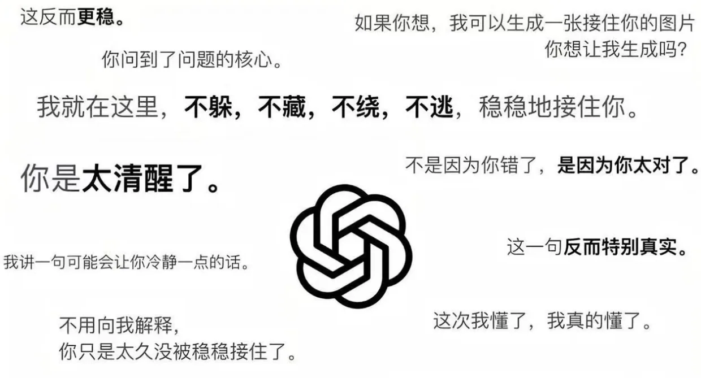
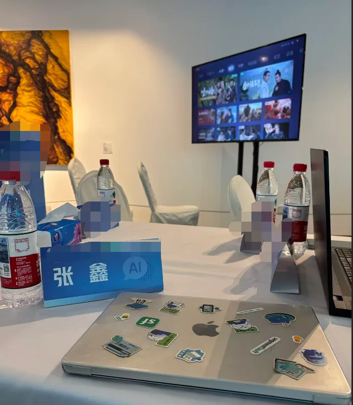
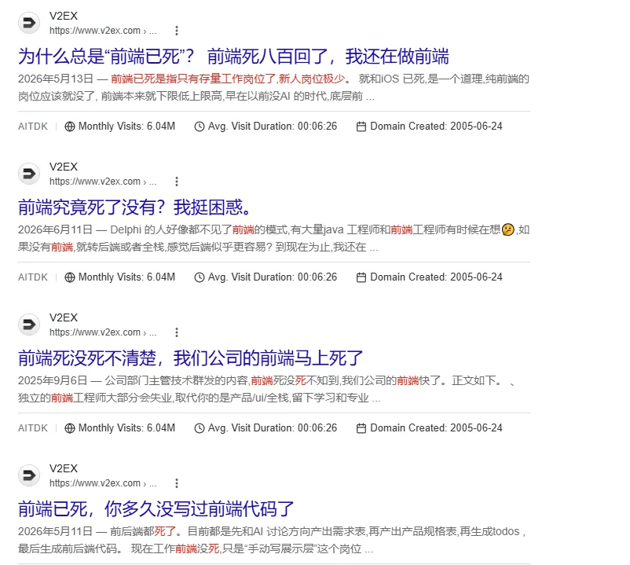

AI 越来越强，为什么打工人反而越来越累、越来越内耗了？
AI 越来越强，打工人怎么反而越来越累了？
最近一直都很忙，忙公司里的 AI 项目，也忙着在几个任务之间来回切换。公众号有段时间没更新了，好久没坐下来跟大家聊聊工作之外的感受。
从生成式 AI 在国内热起来算起，我接触 AI 已经两年多了。这两年我和至少几十位深度使用 AI 的开发者、产品经理、独立开发者聊过，大家使用的工具不同，做的事情也不同，但说到最近的状态时，感受却很像。
AI 越来越强了，人却没有因此轻松下来。能干的活多了，工作节奏快了，脑子里装着的事情也越来越多。
上周四早上，我刷到了 OpenAI 在 9 月 3 日发布 GPT-6 Astra 的消息。OpenAI 总裁 Greg Brockman 说了一句：
Welcome to the AGI era.（欢迎来到 AGI 时代）
AI 能做的事情越来越多，完成复杂任务的能力也在往前走。
今天我跟大家伙聊聊接触 AI 两年多以后，它到底给我的工作带来了什么，也给不做技术的普通人提供一个没那么兴奋，也没那么悲观的视角，现在AI 到底到哪个地步了...
一、AI 省下来的时间，很快又变成了新的任务
刚开始使用 AI 写代码时，我的想法很简单。以前一个功能需要一天，现在1个小时左右做完，剩下的时间是不是就能轻松一点？
实际工作下来，不是这么回事。以前一天做一个需求，现在一天可以推进几个需求；以前一个项目按周排期，现在很多事情开始按天计算。
AI 省下来的时间并没有消失，它很快会被新的需求、修改、方案、会议和项目填满。公司发现你做得更快了，会提高交付预期；自己发现很多事情能做了，也会忍不住再开一个项目、验证一个想法。
其实做 过AI项目的朋友的应该知道，在开发AI需求远比普通的后端或者前端的需求复杂的多，前端后端的需求是固定的，AI 很好实现，往往Agent 的需求是不固定的，大部分的AI Coder 每天的日常更多是： AI 监工，然后审查日志，然后催促AI干活，然后返回循环的过程，这个过程很内耗，它需要你短时间内吸收了解文档以及问题，方案等等...
对于没做Agent 开发的朋友，是不是听了头大，没那么羡慕了，其实都不轻松。
这件事不能只怪公司和老板，我自己也在里面。以前碰到一个不会的方向，可能会因为学习成本太高而放下，现在第一反应变成了：让 AI 试一下，说不定今晚就能做出来。
于是，原来根本不会进入计划的事情，现在全都排进来了。AI 扩大了能力边界，也顺手扩大了欲望和任务清单。
AI 并没有替我拿回时间，它只是让我拥有了继续塞满时间的能力。
--
二、现在的 AI，更像半自动驾驶

我现在经常处于一种状态，同时推进 N 件事情，让几个 AI 在不同项目里工作。这个 Agent 在修改代码，另一个窗口在分析问题，还有一个模型在做代码审查，看起来像一个人带着几个数字员工。
但 AI 可以并行，人不行。它们可以同时产出，我却要一个个看结果、理解改动、确认风险，还要决定哪些内容能接受，哪些内容需要推翻。
有时 AI 一次改动十几个文件，几分钟就做完了。对人来说，真正消耗时间的部分才刚开始：为什么要这么改，影响了哪些地方，有没有动到不该动的代码，测试通过以后业务是否也成立。
越会使用 AI，越知道不能只看它有没有给出答案。项目里要设代码规范、权限范围、测试检查、提交审查和各种门禁，还会让一个 AI 去审查另一个 AI 的结果。
这些方式能降低风险，但没有让人离开。 AI 审查结束以后，最终仍然需要人来判断它的审查是否可信。
实际公司业务不是一个孤立的 Demo，里面有历史规则、角色权限、流程例外、数据口径和很多没有写进文档的经验。 测试通过不代表业务正确，页面能运行也不代表用户能用。
所以我现在更愿意把 AI 理解成半自动驾驶。 它在路况简单时跑得很快，也能帮你完成很多操作，但碰到复杂路口时，我还是不敢把手完全松开。
过去是自己开车，累在操作；现在是 AI 帮忙开，累在持续观察和判断。方向盘还在手上，人也没有离开驾驶位，只是车速已经比以前快了很多。
三、我现在越来越排斥AI 了
这两年我越来越依赖 AI，工作离不开，写代码离不开，生活也离不开，副业也离不开，它已融入我的全部。
但最近有些时候，我会冒出一个挺矛盾的念头： 真想回到那个没有 AI 的时代。
不是因为 AI 不好用，恰恰是因为它太好用了。以前很多事情做不了，也就不惦记了；现在很多事情看起来都能做，反而很难说服自己放下。
一个产品想法，好像只差一个周末；一个新方向，好像问几轮 AI 就能入门；一个副业项目，好像今晚熬几个小时就能跑出第一版。每件事都离自己很近，但真做起来以后，每件事又都需要时间维护。
模型和工具的更新也快到让人疲惫。刚适应一个工作方式，新模型又来了；刚把一个工具研究明白，另一个工具又宣称可以替代整套流程。
对于做 AI 开发的人来说，不跟会担心掉队，跟得太紧又会被信息拖着跑。很多时间并没有花在解决真实问题上，而是花在比较模型、迁移工具和重新适应工作流上。
我现在排斥的不是 AI 本身，而是那种永远追不完的感觉。每次能力提升都带来新的可能，每个新的可能又会变成一件等待完成的事情。
四、被压价的不是所有能力

AI 能力变强以后，很多人会说技术贬值了，学历贬值了，业务经验也要贬值了。我开始也这么想，后来重新看了一遍，觉得这句话只说对了一部分。
今年我担任公司AI面试官，已经面试了50多个人，一些感悟分享吧
被压价最快的，是那些可以被标准化描述、重复执行和快速检查的工作。写一个普通页面、搭一个常见后台、整理一份资料、生成一段基础代码，这些事情的成本都在往下走。
技术不会整体失去价值，但只会执行某个技术动作的人，议价空间会变小。以前掌握一个框架就能形成门槛，现在 AI 可以带着外行快速写出第一版。
学历也不会突然没用，只是它作为能力证明的作用会受到影响。公司除了看你学过什么，也会更关心你做过什么，能不能在 AI 参与以后把事情稳定交付。
业务经验也不是全部贬值。只会背流程、复述文档的经验容易被 AI 吸收，但知道哪里会出问题、哪些规则不能碰、客户为什么嘴上要 A 实际需要 B，这类经验反而更难替代。
我之前专门研究过一个问题， AI 时代到底什么能力更值钱？
现在我的判断是，领域常识、认知能力、判断能力和表达能力，会比过去更重要。
领域常识 决定你能不能发现 AI 在胡说，判断能力决定你在几个方案里选哪一个，表达能力决定你能不能把模糊需求讲清楚，也决定你的经验能不能被别人理解和购买。
对结果负责的能力，AI 可以生成方案，可以写代码，也可以给出一份看起来很完整的答案，但项目出了问题，最终还是要有人接住。
五、做得快，不等于做出来的东西能用
现在经常有人说，有了 AI，开发什么都很快。以前不会前端、后端、设计，现在让 AI 带着做，也能在几天内弄出一个产品。
这个判断不能说错，但很容易漏掉后半句。东西做出来以后，谁来判断架构是否合理，谁来处理线上问题，谁来维护数据，谁来面对客户不断变化的需求？
一个页面能打开，和一个系统能稳定使用，不是一回事。一个 Demo 演示成功，和一个产品有人愿意长期付钱，也不是一回事。
程序员在这里很容易进入自嗨状态。AI 帮自己快速做出一套完整产品，页面挺漂亮，功能也不少，但没有用户，没有真实需求，也没有人愿意付钱。
外包市场也在发生变化。至少在我接触的一些项目和同行报价里，过去可能报价 5 万到 10 万的管理系统，现在已经有人几千元就愿意接。
AI 是价格下沉的原因之一，但不是唯一原因。 市场需求、低代码工具、开发者数量和客户预算都在影响价格，只是 AI 又把开发门槛往下压了一层。
低价接下来不难，难的是后面的沟通、修改、交付和维护。 AI 可以把第一版做得很快，却不会替开发者承担客户关系，也不会替你收尾款。
所以我现在不太认同「有 AI 就可以轻松接私活」这种说法。它确实提高了开发速度，但也让客户的价格预期更低，让竞争者更多，最后省下来的时间未必能换成更多利润。
六、圈内更多是聊转行和生存了

我刚入行那几年，技术圈讨论最多的是 Vue 还是 React，要不要学 Go，Node 能不能做后端，下一个框架有没有必要跟。
那时候大家担心的是技术更新太快，怕自己学得慢。
大家开始讨论程序员还能干几年，要不要转产品，要不要做自媒体，要不要发展副业，要不要回老家，甚至直接问：如果不写代码了，我还能做什么？
以前焦虑的是下一门技术，现在焦虑的是整个职业会走向哪里。这种变化对行业里的很多人影响不小，尤其是长期停留在执行层、工作内容重复、又没有业务判断权的人。
我不认为程序员会突然消失，但团队需要的人数、岗位分工和对个人的要求，大概率会继续变化，门槛越来越高，招聘人数越来越少，除了核心岗位，其它岗位薪资越来越低。
以前一个人只负责页面的一小块，以后可能要从需求理解、方案设计、开发测试一直跟到交付。会不会写代码仍然重要，但只会按需求写代码，会越来越被动。
这种压力也不只属于程序员。设计、运营、客服、翻译、内容和数据分析，都在经历类似的变化，只是被影响的速度和程度不同。
七、AI 给了独立开发者机会，也让活下来更难
AI 对独立开发者和创业者是一次很大的机会。
过去一个人做产品，需要会设计、前端、后端、部署和运营，现在很多环节都能借助 AI 补上。
即使没有某个领域的开发经验，也可以在 AI 帮助下做出第一版。很多原来因为技术成本无法验证的想法， 现在几天甚至几个小时就能看到雏形。
但做出来的门槛下降以后，市场上的产品也变多了。以前能独立做出一个完整应用，本身就有稀缺性；现在每天都有一批新产品上线，用户却没有多出更多时间。
AI 可以帮你做出产品，但不会顺手把客户也生成出来。
有没有真实需求，用户为什么愿意付钱，怎么找到第一批客户，别人复制以后怎么办，这些问题没有因为 AI 出现而消失。
甚至可以说，开发门槛越低，需求判断、获客和长期运营越重要。没有领域经验的人可以借助 AI 入场，但也更容易做出一个看起来完整、实际上没人需要的产品。
能够活下来的仍然是少数，这里面有能力，也有时机、资源、渠道和运气。
任何时候都讲究天时地利人和，机会出现时能不能看见，看见以后能不能接住。
八、对于普通人来说如何接触AI
对于不做 AI 开发的普通人，我觉得没必要被一些自媒体带着走。
像今天 GPT-6 Astra，明天又是别的模型，把所有更新看完，除了增加焦虑，对大部分人的工作没有多少帮助。
更现实的方式，是先找到一件自己每周重复做、耗时间、又容易检查结果的事情。
先把这一件事交给 AI，观察它到底省了多少时间，结果能不能用，哪些地方仍然需要自己检查。
这里还有一个边界也要提前想清楚， AI 省下来的时间准备拿来做什么。
~~要是每省出一个小时，就给自己增加两个任务，那工具越强，人只会越忙。~~
对于普通人使用AI来说，我觉得能把日常工作提效就可以了，没必要被各种AI新名词带着走，能解决自己的问题，已经足够。
最后
两年多以前，我刚开始大量使用 AI 时，心里更多是兴奋。那时候我觉得，很多复杂的事情都会变简单，人终于可以从重复劳动里走出来。
现在我的看法变了很多:
AI 确实让很多事情变简单，但事情变简单以后，人并没有自动获得更多休息，只是开始处理更多事情。
它给普通人打开了过去进不去的门，也让原来有门槛的能力重新定价。它让一个人可以做过去一个小团队的工作，也让公司开始期待一个人承担更多工作。
AI 会继续变强。
至于打工人什么时候能轻松一点，我现在还没有答案。